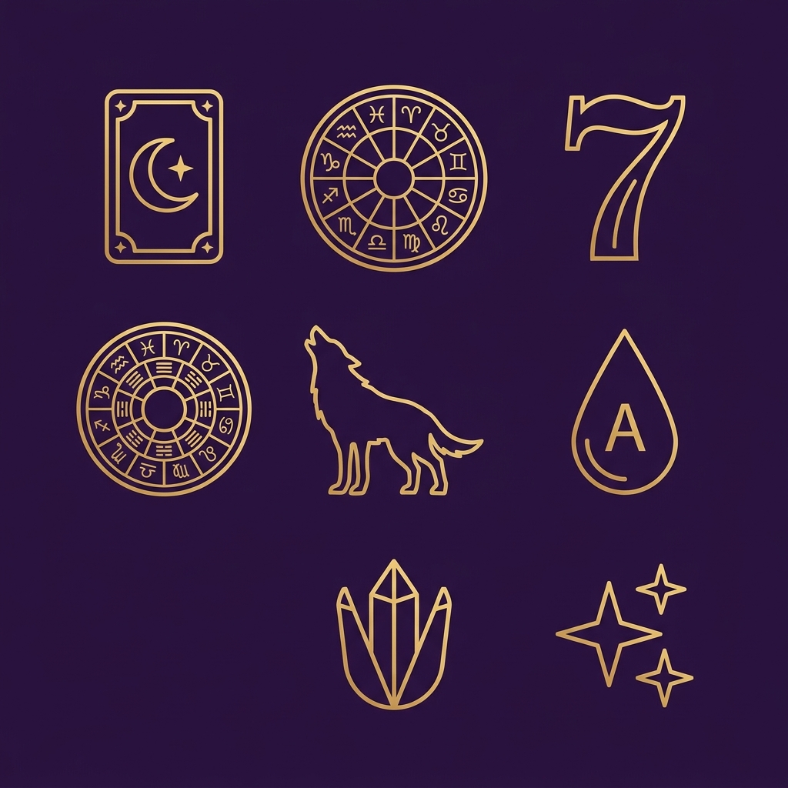
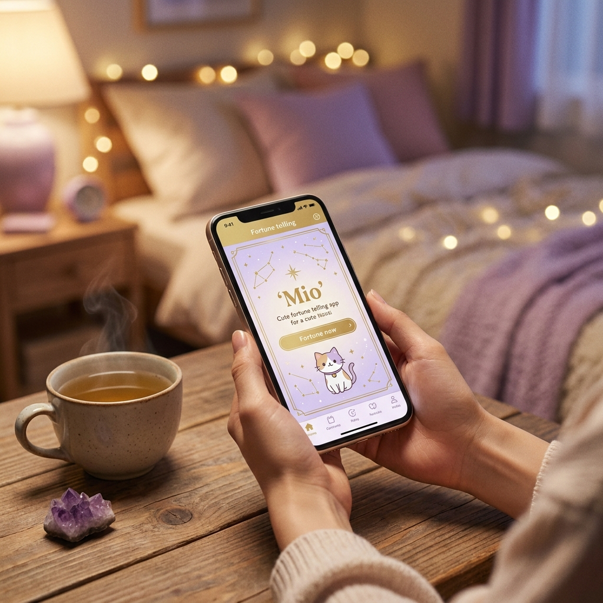
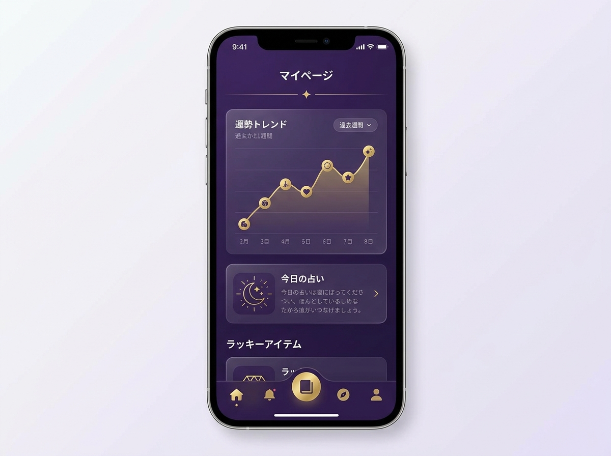

その迷い、ひとりで抱えないで。
あなたの毎日に、
星のヒントを。
恋も、仕事も、これからのことも。
LINEを開けば、AI占い師『澪（みお）』がそっと寄り添い、
今のあなたに必要な答えを照らします。
本格占術
いつでも
ではじめる
だけで完結
占い師 澪からのメッセージ
はじめまして、澪（みお）です。
占いは、未来を言い当てるためのものじゃないと思っています。
迷ったとき、そっと背中を押してくれる——そんな存在でありたい。
うまく言葉にできない気持ちも、大丈夫。
あなたのペースで、いつでも聞かせてくださいね。
― 澪
こんな夜、ありませんか？
眠れない夜、
こんなこと考えていませんか？
大丈夫。その気持ち、澪に話してみませんか？
どんな悩みでも
その悩み、『澪』に相談できます。
恋愛・結婚
片思い、復縁、相手の気持ち、結婚のタイミング。
仕事・転職
キャリアの選択、転職の時期、職場の人間関係。
金運・お金
お金の流れ、金運アップ、大きな決断の後押し。
人間関係
家族、友人、職場。こじれた関係の糸口を探します。
健康・体調
心と体のバランス、日々を整えるヒント。
今日の総合運
今日一日をどう過ごす？ 毎朝の習慣にも。

7つの本格占術
あなたに合った占術で、深く読み解く。
迷ったら「おまかせ」でOK。テーマに合う占術を澪が選びます。
今の状況と心を読む
星が導く運勢
数字が示す本質
運命の流れ
本命星で見る気質
あなたのキャラ
相手との相性
澪が自動で選ぶ
たとえば、こんなふうに
あなただけの言葉が、届きます。

※ 鑑定文はイメージです。実際は占術・テーマに合わせて生成されます。
選ばれる理由
はじめての方に、選ばれています。
思い立ったら、すぐに。
専用アプリのダウンロードは不要。使い慣れたLINEで、通勤中も、眠れない夜も、いつでもすぐに相談できます。
占い師さながらの、深い鑑定。
7つの占術を使い分け、あなたの悩みに合わせて澪が丁寧に読み解きます。占いが初めての方にも、やさしい言葉で。
占って終わり、じゃない。
鑑定結果はマイページに自動保存。運勢の推移をグラフで振り返れるから、当たった実感も、自分の成長も見えてきます。
あなただけの記録
占って終わりじゃない。
“振り返れる”占い。
- ✨運勢グラフ
日々の運勢スコアを折れ線グラフで可視化。好調の波を先読み。
- ✨占い日記
当たった／当たらなかった＋出来事を記録。自分だけの占いノートに。
- ✨パーソナルアドバイス
履歴と日記から、AIが今後の指針をそっと提案します。

あなたのペースで
好きなときに、
好きなだけ。
今日をふり返り、明日へのヒントを。
スキマ時間にサッと今日の運勢を。
24時間、澪があなたの話を聞きます。
料金プラン
まずは無料で。
物足りなくなったら、いつでも。
縛りなし・いつでも解約OK。無料プランのままずっと使うのも大歓迎です。
かんたん3ステップ
はじめ方は、30秒。
LINEで友だち追加
下のボタンから、澪を友だち追加。
テーマを選ぶ
恋愛・仕事・お金など、占いたいことをタップ。
鑑定結果が届く
あなただけの鑑定が、その場でLINEに。
はじめてでも安心
安心して、ご利用いただくために
安全な決済
お支払いは世界標準のStripeを利用。カード情報を当サービスが保持することはありません。
いつでも解約OK
縛りは一切なし。LINEのメニューからいつでも解約でき、その月の期間内はご利用可能です。
プライバシー配慮
鑑定に必要な範囲の情報のみをお預かりし、大切に取り扱います。
よくあるご質問
はじめる前に、Q&A
本当に無料で使えますか？expand_more
はい。無料プランでは毎月10回まで、タロット占いを無料でご利用いただけます。有料プランへの加入は任意で、無料のままずっと使うこともできます。
解約はいつでもできますか？expand_more
はい。LINEのメニューからいつでも解約できます。縛りはありません。解約後も、その月の期間内はご利用いただけます。
支払い方法は？expand_more
クレジットカード（Visa / Mastercard / JCB / American Express）に対応。決済は安全なStripeを通じて行われます。
占いが当たらなかったら？expand_more
占いは未来を決めるものではなく、より良い選択のヒントです。日記機能で「当たった／当たらなかった」を記録し、自分だけの傾向を掴んでいけます。
スマホがあれば誰でも使えますか？expand_more
LINEアプリ（iOS / Android）をお使いであれば、どなたでもすぐにご利用いただけます。専用アプリのインストールは不要です。
迷ったときは、星に聞いてみて。
今日のあなたに、
星のヒントを。
友だち追加は無料。今すぐ、最初の鑑定を受け取れます。
🔮 無料で澪に相談する